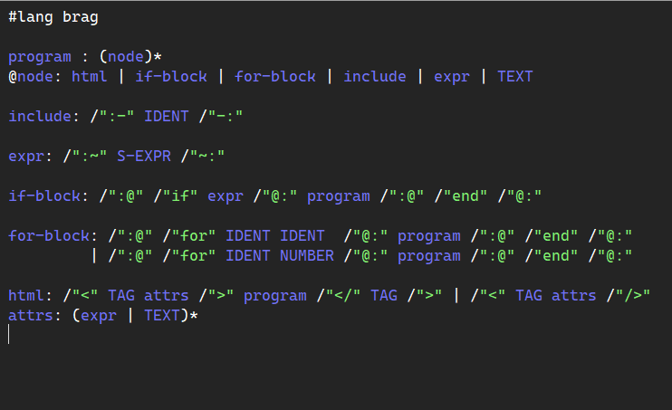
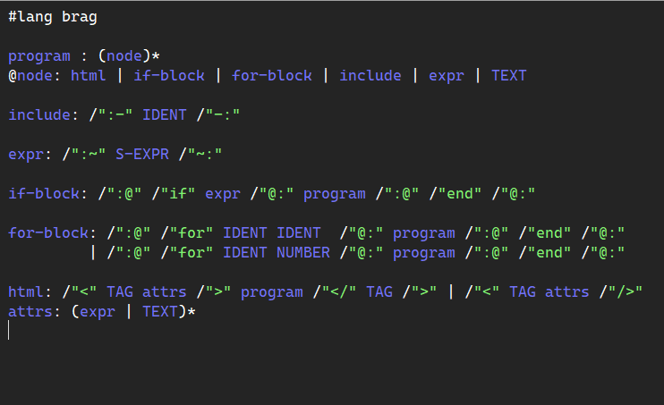
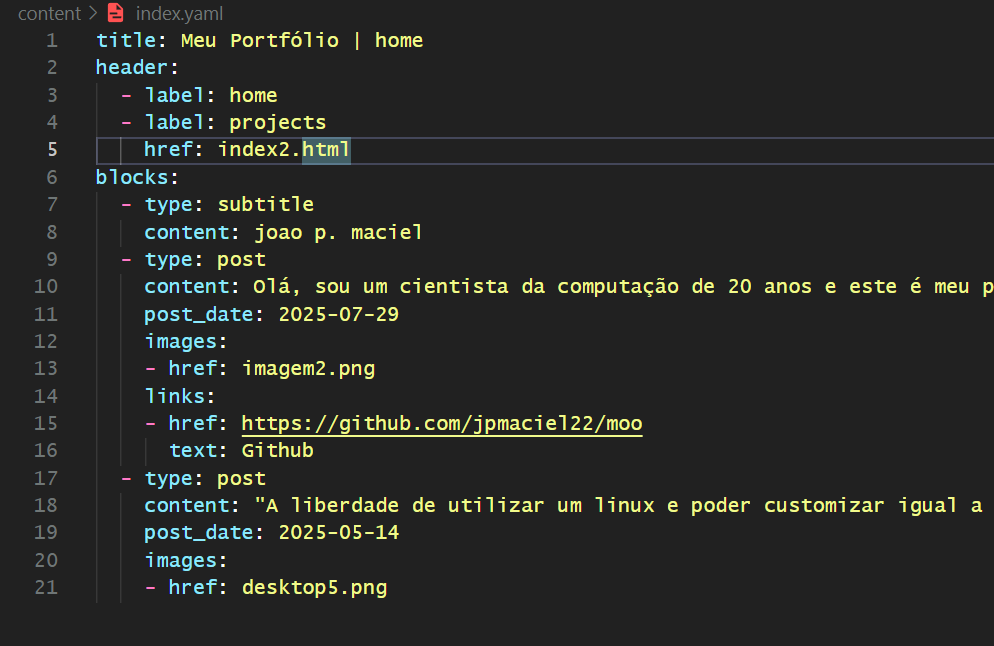
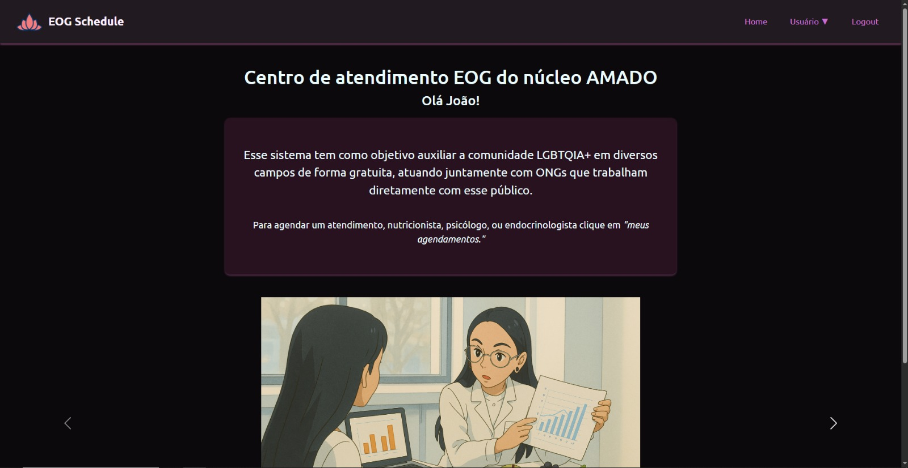

mollusk
mollusk - the template engine, criada baseada no paradigma de programação orientada a linguagens é uma linguagem feita em Racket experimental para o desenvolvimento de websites estáticos.
mollusk - the template engine, criada baseada no paradigma de programação orientada a linguagens é uma linguagem feita em Racket experimental para o desenvolvimento de websites estáticos.
moo - the static site generator, criado pensando em ser flexível por meio de templates e otimizado em developer experience de forma minimalista.
versiculosOnline - uma bíblia virtual em português com agentes de IA para tirar dúvidas sobre a Bíblia.

EqualitySchedule - um sistema de agendamento de consultas focado em auxiliar a ONG "Núcleo AMADO", distribuindo atendimento médico à comunidade LGBT de forma gratuita.
